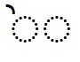

Suggestions for different ways you could use the practice exercises:
- Click on and listen as each item is spoken
- Click on and say each item with the audio
- Pronounce each item and click on the item to check
With the matching exercises, you can either drag and drop, or point and click. Drag and drop may not work on all devices.
How do I drag and drop in the matching exercises?
On ipad or other touch screen, touch and hold the answer until it lifts up (the answer will turn green) . Keeping your finger on the screen, drag the answer. Lift your finger to drop the answer.
With non-touchscreen, hover over an answer until the cursor changes shape, left-click the answer and hold the left mouse or touchpad button (the answer will turn green). Move your mouse pointer to drag the answer. Release the left mouse button to drop the answer.
The answer is "droppable" where the question box with dotted border turns bright yellow (on ipad, a small + also appears).
Note that "droppable" doesn't necessarily mean that the answer is correct - try dropping Answer 2 on Question 1
Question 1
Question 2
Answer 1
Answer 2
id:example-drag-drop |questions:example-questions-source | answers: example-answers-source | questionsseparateparas |answersseparateparas |questionclass:flex-drag-drop-english |answerclass:flex-drag-drop-english |colorClass: consonant-color
Refresh
How do I point and click in the matching exercises?
Select an answer by clicking or touching. The answer will turn green.
Select the corresponding question by clicking or touching a question box with dotted border .
id:example-point-click |questions:example-questions-source | answers: example-answers-source | questionsseparateparas |answersseparateparas |questionclass:flex-drag-drop-english |answerclass:flex-drag-drop-english |colorClass: consonant-color
Refresh
Be sure to match the last item (there's a small "reward").
Practise Biblical Hebrew consonants
Consonant sounds
א:silence| בּ:b| ב:v| ג: g|ד:d| ה: h|ו:v| ז:z| ח:ch| ט :t|י:y| כּ: k|כ:ch| ך:ch| ל : l |מ: m|ם :m| נ: n|ן:n| ס:s| ע :silence| פּ:p| פ:f| ף: f|צ:ts| ץ:ts| ק:k| ר: r|שׁ:sh| שׂ:s| ת :t
source: consonants-hebrew-and-sounds |id: consonants-list|arrow | colorClass: consonant-color |audio: alefbet_consonants_and_vowels
Shuffle Alefbet order
Match consonants with their sounds
Drag each consonant (or consonants) in the top row to the correct in the bottom row.
OR Select a consonant in the top row and then select the corresponding box.
(You can click on a selected consonant to hear its sound.)
א ע
בּ
ב ו
ג
ד
ה
ז
ח כ ך
ט ת
י
כּ ק
ל
מ ם
נ ן
ס שׂ
פּ
פ ף
צ ץ
ר
שׁ
silent| b| v| g| d| h| z| ch| t| y| k| l| m| n| s| p| f| ts| r| sh
id:match-consonants1|questions:consonant-sounds | answers: consonant-answers-source1| sounds:consonant-sounds |answersseparateparas |questionclass:flex-drag-drop-english |audio: alefbet_consonants_and_vowels| colorClass: consonant-color|selection:7
Practise again
Match consonants with their sounds (harder)
Drag each consonant in the top row to the correct in the bottom row.
OR Select a consonant in the top row and then select the corresponding box.
(You can click on a selected consonant to hear its sound.)
א:ע
בּ
ב:ו
ג
ד
ה
ז
ח:כ:ך
ט:ת
י
כּ:ק
ל
מ:ם
נ:ן
ס:שׂ
פּ
פ:ף
צ:ץ
ר
שׁ
id:match-consonants2|questions:consonant-sounds | answers: consonant-answers-source2 | sounds:consonant-sounds |answersseparateparas |questionclass:flex-drag-drop-english |selection:7|audio: alefbet_consonants_and_vowels| colorClass: consonant-color
Practise again
Match consonants with their sounds
Click on to hear the sound of the consonant.
Then click on the box with the corresponding consonant (or consonants) in the top row.
id:match-consonants3| answers: consonant-answers-source1 | answersseparateparas|sounds:consonant-sounds | answerclass:flex-drag-drop-hebrew |selection:7|audio: alefbet_consonants_and_vowels | colorClass: consonant-color | matchsounds
Practise again
Match consonants with their sounds (harder)
Click on to hear the sound of the consonant.
Then click on the corresponding consonant in the top row.
id:match-consonants4| answers: consonant-answers-source2 | answersseparateparas|sounds:consonant-sounds | answerclass:flex-drag-drop-hebrew |audio: alefbet_consonants_and_vowels | colorClass: consonant-color | matchsounds|selection:7
Practise again
Dots in consonants
בּ:b|ב:v| גּ: g|ג: g|דּ:d |ד:d| זּ:z|ז:z| טּ :t|ט :t| יּ:y|י:y| כּ: k|כ: ch| לּ : l|ל : l|מּ: m|מ: m|נּ : n|נ : n|סּ:s |ס:s|פּ:p|פ:f|צּ:ts|צ:ts|קּ:k|ק:k| שּׁ:sh|שׁ:sh|שּׂ:s|שׂ:s|תּ:t |ת:t
source: consonants-with-dots |id: dots-in-consonants|arrow | colorClass: consonant-color |audio: alefbet_consonants_and_vowels
Shuffle Alefbet order
Match final consonants
Drag each consonant in the top row to the correct box in the bottom row.
OR Select a consonant in the top row and then select the corresponding box.
(You can click on a selected consonant to hear its sound.)
כ
מ
נ
פ
צ
ך
ם
ן
ף
ץ
ch| m| n| f| ts
id:final-letters1|questions:final-letters-questions-source | answers: final-letters-answers-source| sounds:final-letters-sounds-source|questionsseparateparas|answersseparateparas |audio: alefbet_consonants_and_vowels| colorClass: consonant-color
Practise again
Match consonants with the same sound (including final forms of letters)
Drag each consonant in the top row to the correct in the bottom row.
OR Select a consonant in the top row and then select the corresponding box.
(You can click on a selected consonant to hear its sound.)
א:ע
ב:ו
ח:כ:ך
ט:ת
כּ:ק
מ:ם
נ:ן
ס:שׂ
פ:ף
צ:ץ
silent|v|ch|t|k|m|n|s|f| tst
id:same-sounds|questionsanswers:same-sounds-source | sounds:same-sounds-sounds-source|questionsseparateparas|audio: alefbet_consonants_and_vowels | colorClass: consonant-color
Practise again
Match consonants with the same sound (excluding final forms of letters)
Drag each letter in the top row to the correct in the bottom row.
OR Select a consonant in the top row and then select the corresponding box.
(You can click on a selected consonant to hear its sound.)
א:ע
ב:ו
ח:כ
ט:ת
כּ:ק
ס:שׂ
silent|v|ch|t|k| s
id:same-sounds2|questionsanswers:same-sounds2-source | sounds:same-sounds2-sounds-source|questionsseparateparas|audio: alefbet_consonants_and_vowels | colorClass: consonant-color
Practise again
Alef|Bet|Vet|Gimmel|Dalet|Heh|Vav|Zayin|Chet|Tet|Yod| Kaf|Chaf|Final Chaf |Lamed|Mem|Final Mem|Nun|Final Nun|Samech|Ayin|Pei|Fei|Final Fei|Tzadi|Final Tzadi|Kuf|Resh|Shin|Sin|Tav
Consonant letter names
Click on under a letter to see its name
א:alef| בּ:bet| ב:vet| ג: gimel|ד:dalet| ה: heh|ו:vav| ז:zayin| ח:chet| ט :tet|י:yod| כּ: kaf |כ:chaf| ך:final_chaf| ל : lamed|מ: mem|ם :final_mem| נ: nun|ן:final_nun| ס:samech| ע :ayin| פּ:pei| פ:fei| ף: final_fei |צ:tzadi| ץ:final_tzadi| ק:kuf| ר: resh|שׁ:shin| שׂ:sin| ת :tav
source: consonants-names |id: C4| tooltips:allconsonants-letternames| arrow |audio:alefbet_consonants_and_vowels |colorClass: consonant-color | containerclass: flex-container-heb-with-tooltips2
Shuffle Alefbet order
Match consonant letter names
Drag each letter in the top row to the correct in the bottom row.
OR Select a consonant in the top row and then select the corresponding box.
(You can click on a selected consonant to hear its sound.)
א
בּ
ב
ג
ד
ה
ו
ז
ח
ט
י
כּ
כ
ך
ל
מ
ם
נ
ן
ס
ע
פּ
פ
ף
צ
ץ
ק
ר
שׁ
שׂ
ת
silent|b|v|g|d|h|v|z|ch|t|y|k|ch|ch|l|m|m|n|n|s|silent|p|f|f|ts|ts|k|r|sh|s|t
id:letter-names|questions:allconsonants |questionsseparateparas | answers: allconsonants-letternames |sounds:allconsonants-sounds |answerclass:flex-drag-drop-english |selection:7 |audio: alefbet_consonants_and_vowels| colorClass: consonant-color
Practise again
Practise Biblical Hebrew vowels
Vowel sounds
a1:a | a2 : a | a_or_o: a_or_o | o1 : o | o2 : o | o3 : o | ei1 : ei | ei2 : ei | e1 : e | e2 : e | e3 : e | i1 : i | i2 : i | u1 : u | u2 : u | uh_or_silent : uh_or_silent | ie1 : ie | ie2 : ie | oi : oi | ui : ui
source: vowels-hebrew-and-sounds| id: vowel-sounds1| arrow | colorClass: vowel-color|audio: alefbet_consonants_and_vowels | hebrewinimage: vowels | hebrewclass: vowel-image-select-exercise |containerclass: flex-container-heb-cv
Shuffle
Match vowels with their sound
Drag each vowel in the top row to the correct box in the bottom row.
OR Select a vowel in the top row and then select the corresponding box.
(You can click on a selected vowel to hear its sound.)
a1_and_a2 | a_or_o | o1_and_o2_and_o3 | ei1_and_ei2 | e1_and_e2_and_e3 | i1_and_i2 | u1_and_u2 | ie1 | ie2 |oi | ui | uh_or_silent
a |a_or_o| o| ei | e |i | u| ie|ie_or_a|oi|ui|uh_or_silent
a |a or o| o| ei | e |i | u| ie|ie or a|oi|ui|uh or silent
id:vowel-sounds2 |questions:vowels-sounds-questions |questionclass:flex-drag-drop-english | answers: vowels-hebrew2 | answerinimage: vowels | answerclass: vowel-image-drag-drop | sounds:vowels-sounds |audio: alefbet_consonants_and_vowels| colorClass: vowel-color | selection:7
Practise again
Match vowels with their sound
Drag each vowel in the top row to the correct box in the bottom row.
OR Select a vowel in the top row and then select the corresponding box.
(You can click on a selected vowel to hear its sound.)
a1:a2 | a_or_o | o1:o2:o3 | ei1:ei2 | e1:e2:e3 | i1:i2 | u1:u2 | ie1 | ie2 |oi | ui | uh_or_silent
id:vowel-sounds3 |questions:vowels-sounds-questions |questionclass:flex-drag-drop-english | answers: vowels-hebrew3 | answerinimage: vowels | answerclass: vowel-image-drag-drop | sounds:vowels-sounds |audio: alefbet_consonants_and_vowels| colorClass: vowel-color | selection:7
Practise again
Match vowels with their sound
Click on to hear the sound of the vowel.
Then click on the box with the corresponding vowel (or vowels) in the top row.
id:vowel-sounds4 | matchsounds | answers: vowels-hebrew2 | answerinimage: vowels | answerclass: vowel-image-drag-drop | sounds:vowels-sounds |audio: alefbet_consonants_and_vowels | colorClass: vowel-color | selection:7
Practise again
Match vowels with their sound (harder)
Click on to hear the sound of the vowel.
Then click on the corresponding vowel in the top row.
id:vowel-sounds5 | matchsounds | answers: vowels-hebrew3 | answerinimage: vowels | answerclass: vowel-image-drag-drop | sounds:vowels-sounds |audio: alefbet_consonants_and_vowels| colorClass: vowel-color |selection:7
Practise again
ַ:a | ֲ: a | ָ: a_or_o | ֳ: o | ֹ : o | וֹ : o | ֵ : ei | י ֵ : ei | ֶ : e | ֱ : e | י ֶ : e | ִ : i | י ִ : i | ֻ : u | וּ : u | ְ : uh | י ַ : ie | י ָ : ie | וֹי : oi | וּי : ui
Practise Biblical Hebrew consonant + vowel
י
ֲ | ֳ | ֱ
ְ
א|ה|ח|ע
ֹ
ו
וּי
ז | ט | ל | נ | ס | פּ | פ | צ | ק | שׂ
וֹי
א | ג | ה
ַ : a1 | ֲ : a2 | ָ: a_or_o | ֳ : o1 | ֹ : o2 | וֹ : o3 | ֵ : ei1 | י ֵ : ei2 | ֶ : e1 | ֱ : e2 | י ֶ : e3 | ִ : i1 | י ִ : i2 | ֻ : u1 | וּ : u2 | ְ : uh_or_silent | י ַ : ie1 | י ָ : ie2 | וֹי : oi | וּי : ui
א: silence | בּ:b| ב:v| ג: g|ד:d| ה: h|ו:v| ז:z| ח:ch| ט :t|י:y| כּ: k|כ:ch| ל : l |מ: m| נ: n| ס:s| ע :silence| פּ:p| פ:f| צ:ts| ק:k| ר: r|שׁ:sh| שׂ:s| ת :t
Select one or more consonants and one or
more vowels to practise, then click on "Create exercises" below.
(Click on a consonant or vowel to select or unselect)
Select all consonants
Unselect all consonants
id: select-consonant|source: consonants-cpv | colorClass: consonant-color |selectletterclick |containerclass:flex-container-heb-cv
id: select-vowel|source: vowels-hebrew-and-sounds| colorClass: vowel-color2 |selectletterclick |containerclass: flex-container-heb-cv | hebrewinimage: vowels | hebrewclass: vowel-image-select-exercise
Consonant plus vowel
בַּ
ba
id: cpv-exercise1 | sourcehebrew: cpv-exercise1-hebrew |hebrewseparateparas|sourcesound: cpv-exercise1-sounds | colorClass: vocab-color|arrow |audio: alefbet_consonant_plus_vowel | selection:15
Shuffle New selection
Match consonant+vowel with its sound
Click on to hear the sound of the consonant+vowel.
Then click on the corresponding consonant+vowel in the top row.
בַּ
ba
id: cpv-exercise2 | answers: cpv-exercise2-hebrew | answersseparateparas |sounds: cpv-exercise2-sounds | colorClass: vocab-color | answerclass:flex-drag-drop-hebrew| |audio: alefbet_consonant_plus_vowel | matchsounds| selection:10
Practise again
Practise dividing Biblical Hebrew words into syllables
Divide each word in the dotted boxes into syllables by inserting a space between letters.
Click on a letter to insert a space to the left.
Click on a space to remove it.
Click "Check" to check your answer when you are finished (for one-syllable words you don't need to do anything
before clicking "Check".)
You can hear how a word is pronounced by clicking on it.
id:syllables-exercise| | sourcesound:one-syllable-sounds: syllables-final-sounds : syllables-penultimate-sounds | stress: last : secondlast | sourcesyllables: one-syllable-hebrew : syllables-final-hebrew : syllables-penultimate-hebrew | audio:words | selecton:10
Practise again
Practise Biblical Hebrew cantillation marks indicating stressed syllable
These cantillation marks always occur at the start or end of a word, so they do not always indicate which syllable is stressed. They are not included in the exercise.

These cantillation marks are included in the exercise. These cantillation marks always indicate which syllable is stressed. They are placed above or under the first consonant of the stressed syllable (except )


All cantillation marks
For each word in the dotted boxes, click on the stressed syllable.
You can click on the word to hear the pronunciation.
id:cantillation-all| whichlist: all | sourcesound: syllables-final-sounds:syllables-penultimate-sounds | stress: last : secondlast | sourcesyllables: syllables-final-hebrew : syllables-penultimate-hebrew | audio:words | selecton:10
Practise again
Practise only
Hints
When is before the last letter in a word,
this indicates the first letter of the stressed syllable.
When is at the end of a word, and there is no other
in the word, the last syllable is stressed.
For each word in the dotted boxes, click on the stressed syllable.
You can click on the word to hear the pronunciation.
id:cantillation-pashta-kadma |whichlist: pashta-kadma | sourcesound: syllables-final-sounds:syllables-penultimate-sounds | stress: last : secondlast | sourcesyllables: syllables-final-hebrew : syllables-penultimate-hebrew | audio:words | selecton:10
Practise again
Practise pronouncing words which occur frequently in the Tanakh
Words with only one syllable
לּוֹ
לָהּ
לָךְ
לִּי
בּוֹ
בָּהּ
בָּךְ
בִּי
אֵת
מִן
עַל
אֵל
כֺּל
לֹא
בֵּן
כִּי
בּוֹא
בָּא
יוֹם
אִישׁ
בֵּית
עַם
יָד
הוּא
עַד
אָב
זֶה
עִיר
שׁוּב
אִם
עִם
קַח
שֵׁם
לֵב
מֵת
שָׁם
אֵין
גַּם
כֵּן
אַל
אָח
קוּם
זֺאת
רֺאשׁ
שִׂים
בַּת
מֵי
כֺּה
מָה
גּוֺי
הֵם
הַר
טוֹב
קוֺל
פֶּה
פִּי
פִּיו
צַו
הִיא
חַי
w003_lo | w003_lah | w003_lach | w003_li | w004_bo | w004_bah | w004_bach | w004_bi | w005_et | w006_min | w007_al | w008_el | w010_kol | w012_lo | w013_ben | w014_ki | w019_bo | w019_ba | w022_yom | w023_ish | w025_beit | w027_am | w028_yad | w031_hu | w033_ad | w034_av | w035_zeh | w039_ir | w041_shuv | w042_im | w044_im | w046_kach | w053_shem | w054_lev | w056_met | w057_sham | w060_ehn | w063_gam | w069_ken | w071_al | w076_ach | w077_kum | w079_zot | w080_rosh | w081_sim | w082_bat | w083_mei | w085_koh | w086_mah | w087_goy | w088_hem | w089_har | w092_tov | w097_kol | w100_peh | w100_pi | w100_piv | w102_tsav | w104_hi | w178_chai
sourcehebrew: one-syllable-hebrew | hebrewseparateparas|sourcesound: one-syllable-sounds | containerclass: flex-container-heb-with-tooltips |id: one-syllable| arrow|colorClass: vocab-color|audio: words | selection:10
New selection
Words with stress on final syllable
Click on under a word to see how the word divides into syllables
w003_lcha | w003_lahem | w003_lachem | w004_bcha | w004_bahem | w005_vuhet | w005_oto | w005_otah | w005_etchem | w005_otam | w005_oti | w005_vuhotach | w006_mimcha | w006_mehem | w007_alav | w007_alehem | w008_elav | w008_elai | w009_asher | w010_vchol_haam | w010_mikol_banav | w010_mikol_haam | w011_amar | w011_vayomru | w011_amart | w011_amuhru | w013_banim | w013_bnei | w013_uvanim | w013_lvanav | w015_haya | w015_vayhi | w015_haytah | w015_hayu | w015_yiye | w016_kaasher | w017_asah | w017_vayaasu | w018_elohim | w018_elohei | w018_velohei | w019_vayavo | w019_uva | w020_mlachim | w020_malchei | w022_yamim | w022_ymei | w022_yamav | w023_anashim | w023_anshei | w024_panim | w024_lifnei | w024_panav | w024_ufanim | w025_habatim | w025_bateichem | w025_uvateichem | w026_natan | w026_vayiten | w027_amim | w027_haam | w028_ydei | w029_halach | w030_davar | w030_dvarim | w030_hadvarim | w030_udvarim | w032_raa | w032_vayar | w034_avot | w034_aviv | w034_avi | w035_hazeh | w036_shama | w036_shma | w036_vayishma | w036_yishmuhu | w037_diber | w037_vaydaber | w038_yashav | w039_hearim | w039_arei | w040_yatza | w040_vayetzei | w038_yeshvu | w043_hinei | w043_vhinei | w044_imo | w044_imach | w044_imcha | w044_imi | w045_echad | w045_achat | w046_lakach | w046_vayikach | w047_yada | w049_alah | w049_eeleh | w050_itchem | w050_itam | w050_iti | w051_shana | w051_shanim | w052_ani | w052_anochi | w053_shmo | w053_shmah | w053_shmot | w054_lvav | w055_shalach | w055_vayshalach | w055_vayishluhku | w056_vayamot | w058_achal | w058_vachalt | w059_avadim | w061_isha | w061_nashim | w061_haisha | w061_ishtcha | w062_adon | w062_adonai | w065_nafshot | w066_cohen | w066_hacohanim | w067_atah | w070_kara | w070_yikruhu | w070_vayikra | w072_acharei | w075_nasa | w075_vayisa | w076_achiv | w078_shalosh | w078_shlosha | w078_shloshim | w078_ushloshim | w079_hazot | w080_buhrosh | w082_banot | w082_uvanot | w084_meah | w084_meot | w084_umeah | w087_goyim | w087_hagoi | w089_heharim | w090_avar | w090_vuhavarti | w091_adam | w091_haadam | w093_gadol | w094_amad | w094_omed | w096_chamesh | w096_chamishim | w096_vachamisha | w097_bkol | w098_hikah | w099_yalad | w100_ufiv | w101_alafim | w102_tsivah | w102_vaytsav | w193_avon | w238_mitzvot | w238_mitzvotai | w245_yishtachavu | w245_yishtachavu | w635_breishit
לְ ךָ
לָ הֶם
לָ כֶם
בְּ ךָ
בָּ הֶם
וְ אֵת
אֹ תוֹ
אֹ תָהּ
אֶתְ כֶם
אֹ תָם
אֹ תִי
וְ אֹ תָךְ
מִמְּ ךָ
מֵ הֶם
עָ לָיו
אֲ לֵי הֶם
אֵ לָיו
אֵ לָי
אֲ שֶׁר
וְ כָל־ הָ עָם
מִ כָּל־ בָּ נָיו
מִ כָּל־ הָ עָם
אָ מַר
וַ יֹּאמְ רוּ
אָ מַרְתְּ
אָֽ מְ רוּ
בָּ נִים
בְּ נֵי
וּ בָ נִים
לְ בָ נָיו
הָ יָה
וַֽ יְ הִי
הָֽ יְ תָה
הָ יוּ
יִהְ יֶה
כּֽ͏ַ אֲ שֶׁר
עָ שָׂה
וַ יַּ עֲ שׂוּ
אֱ לֹ הִים
אֱ לֹ הֵי
וֵא לֹ הֵי
וַ יָּ בֹא
וּ בָא
מְ לָ כִים
מַלְ כֵי
יָ מִים
יְ מֵי
יָ מָיו
אֲ נָ שִׁים
אַנְ שֵׁי
פָּ נִים
לִפְ נֵי
פָּ נָיו
וּ פָ נִים
הַ בָּ תִּים
בָּ תֵּי כֶם
וּ בָ תֵּי כֶם
נָ תַן
וַ יִּ תֵּן
עַ מִּים
הָ עָם
יְ דֵי
הָ לַךְ
דָּ בָר
דְּ בָ רִים
הַ דְּ בָ רִים
וּ דְ בָ רִים
רָ אָה
וַ יַּרְא
אֲ בוֹת
אָ בִיו
אֲ בִי
הַ זֶּה
שָׁ מַע
שְׁ מַע
וַ יִּשְׁ מַע
יִשְׁ מְ עוּ
דִּ בֶּר
וַ יְ דַ בֵּר
יָ שַׁב
הֶ עָ רִים
עָ רֵי
יָ צָא
וַ יֵּ צֵא
יֵשְׁ בוּ
הִ נֵּה
וְ הִ נֵּה
עִ מּוֹ
עִ מָּךְ
עִמְּ ךָ
עִ מִּ
אֶ חָד
אַ חַת
לָ קַח
וַ יִּ קַּח
יָ דַע
עָ לָה
אֶֽ עֱ לֶה
אִתְּ כֶם
אִ תָּם
אִ תִּי
שָׁ נָה
שָׁ נִים
אֲ נִי
אָֽ נֹ כִי
שְׁ מוֹ
שְׁ מָהּ
שְׁ מוֹת
לְ בַב
שַׁ לַּח
וַ יְ שַׁ לַּח
וַ יִּשְׁ לְ חוּ
וַ יָּ מֹת
אָ כַל
וְ אָ כַלְתְּ
עֲ בָ דִים
אִ שָּׁה
נָ שִׁים
הָֽ אִ שָּׁה
אִשְׁ תְּ ךָ
אֲ דוֹן
אֲ דוֹ נָי
נַפְ שׁוֹת
כֺּ הֵן
הַ כֹּ הֲ נִים
אַ תָּה
קָ רָא
יִקְ רְ אוּ
וַ יִּקְ רָא
אַ חֲ רֵי
נָ שָֹא
וַ יִּ שָּׂא
אָ חִיו
שָׁ לֺשׁ
שְׁ לֹ שָׁה
שְׁ לֹ שִׁים
וּ שְׁ לֹ שִׁים
הַ זֹּאת
בְּ רֹאשׁ
בָּ נוֺת
וּ בָ נוֹת
מֵ אָה
מֵ אוֹת
וּ מֵ אָה
גּוֹ יִם
הַ גּוֹי
הֽ͏ֶ הָ רִים
עָ בַר
וְ עָ בַרְ תִּי
אָ דָם
הָֽ אָ דָם
גָּ דוֹל
עָ מַד
עֹ מֵד
חָ מֵשׁ
חֲ מִ שִּׁים
וַ חֲ מִ שָּׁה
בְּ קוֹל
הִ כָּה
יָ לַד
וּ פִיו
אֲ לָ פִים
צִ וָּה
וַ יְ צַו
עֲ וֺן
מִצְ וֺת
מִצְ וֺ תָי
יִשְׁ תַּ חֲ וּוּ
יִשְׁ תַּ חֲ ווּ
בְּ רֵא שִׁית
sourcehebrew: syllables-final-hebrew |hebrewseparateparas |hebrewinsyllables | sourcesound: syllables-final-sounds |id: syllables-final|tooltips:syllables-final-hebrew |tooltipsclass:flex-container-heb30-tooltip |tooltipsseparateparas |tooltipsshowstress: last | arrow|colorClass: vocab-color | containerclass: flex-container-heb-with-tooltips |audio: words | selection:10
New selection
Words with stress on second-last syllable
Click on under a word to see how the word divides into syllables
לָּ נוּ
אֹ תָ נוּ
מִ מֶּ נּוּ
כָּל־ הָ אָ רֶץ
בְּ כָל־ הָ אָ רֶץ
וּ בְ כָל־ הָ אָ רֶץ
לְ כָל־ מִצְ רַ יִם
וּ לְ כָל־ מִצְ רָ יִם
וַ יֹּא מֶר
וַ תֹּא מֶר
אָ מַרְ תָּ
הָ יִי תִי
הָ יִי נוּ
וְ הָ יִי תָ
כָּ מוֹ ךָ
עָ שִׂי נוּ
עָ שִׂי תָ
עָ שִׂי תִי
אֱ לֹ הֵי נוּ
בָּ אוּ
בָּא נוּ
יָ בֹ אוּ
מֶ לֶךְ
וּ מֶ לֶךְ
אֶ רֶץ
הָ אָ רֶץ
וְ הָ אָ רֶץ
הַ בַּ יִת
יָ דֶי הָ
וַ יֵּ לֶךְ
רָ אִי תִי
רָ אִי נוּ
אָ בִי נוּ
וַ יֵּ שֶׁב
וַ יָּ שֻׁ בוּ
עִ מָּ נוּ
יָ דַ עַתְּ
עַ יִן
עֵי נַ יִם
אִ תָּ נוּ
מָ וֶת
עֶ בֶד
שְׁ נַ יִם
שְׁ תַּ יִם
וּ שְׁ נַ יִם
נֶ פֶשׁ
אֵ לֶּה
הָ אֵ לֶּה
דֶּ רֶךְ
הַ דֶּ רֶךְ
וַ יָּ שֶׂם
מַ יִם
וּ מַ יִם
מָא תַ יִם
תַּ חַת
מִ תַּ חַת
וַ תֵּ לֶד
אֶ לֶף
עֶ שֶׂר
קֹ דֶשׁ
שָׁ מַ יִם
לָיְ לָה
w003_lanu | w005_otanu | w006_mimenu | w010_kol_haaretz | w010_bchol_haaretz | w010_uvchol_haaretz | w010_lchol_mitzraim | w010_ulchol_mitzraim | w011_vayomer | w011_vatomer | w011_amarta | w015_hayiti | w015_hayinu | w015_vhayita | w016_kamocha | w017_asinu | w017_asita | w017_asiti | w018_eloheinu | w019_bau | w019_banu | w019_yavou | w020_melech | w020_umelech | w021_eretz | w021_haaretz | w021_vhaaretz | w025_habayit | w028_yadeiha | w029_vayelech | w032_raiti | w032_rainu | w034_avinu | w038_vayeshev | w041_vayashuvu | w044_imanu | w047_yadaat | w048_ayin | w048_ehnayim | w050_itanu | w056_mavet | w059_eved | w064_shnayim | w064_shtayim | w064_ushnayim | w065_nefesh | w068_eleh | w068_haeleh | w073_derech | w073_haderech | w081_vayasem | w083_mayim | w083_umayim | w084_matayim | w095_tachat | w095_mitachat | w099_vateled | w101_elef | w103_eser | w108_kodesh | w118_shamayim | w192_layla
id: syllables-penultimate |sourcehebrew: syllables-penultimate-hebrew |hebrewinsyllables |hebrewseparateparas |sourcesound: syllables-penultimate-sounds |tooltips:syllables-penultimate-hebrew |tooltipsclass:flex-container-heb30-tooltip| tooltipsseparateparas |tooltipsshowstress: secondlast |colorClass: vocab-color | arrow |audio: words| containerclass: flex-container-heb-with-tooltips | selection:10
New selection
Words with stress indicated by cantillation mark
Click on under a word to see how the word divides into syllables and which syllable is stressed.
id: syllables-cantillation |sourcehebrew: one-syllable-hebrew : syllables-final-hebrew: syllables-penultimate-hebrew | cantillation: last:last:secondlast |sourcesound: one-syllable-sounds : syllables-final-sounds : syllables-penultimate-sounds |tooltips: one-syllable-hebrew : syllables-final-hebrew: syllables-penultimate-hebrew |tooltipsshowstress: last:last:secondlast |audio: words| selection:10
New selection
Match words with their pronunciation
Click on to hear the pronunciation of the word.
Then click on the corresponding word in the top row.
לָהּ
לָךְ
לִּי
בָּךְ
בִּי
אֵת
מִן
אֵל
בֵּן
כִּי
יוֹם
אִישׁ
בֵּית
עַם
יָד
הוּא
עַד
אָב
זֶה
עִיר
שׁוּב
קַח
שֵׁם
לֵב
מֵת
שָׁם
אֵין
גַּם
כֵּן
אָח
קוּם
זֺאת
רֺאשׁ
שִׂים
בַּת
מֵי
כֺּה
מָה
גּוֺי
הֵם
הַר
טוֹב
פֶּה
פִּי
פִּיו
צַו
הִיא
חַי
w003_lah | w003_lach | w003_li | w004_bach | w004_bi | w005_et | w006_min | w008_el | w013_ben | w014_ki | w022_yom | w023_ish | w025_beit | w027_am | w028_yad | w031_hu | w033_ad | w034_av | w035_zeh | w039_ir | w041_shuv | w046_kach | w053_shem | w054_lev | w056_met | w057_sham | w060_ehn | w063_gam | w069_ken | w076_ach | w077_kum | w079_zot | w080_rosh | w081_sim | w082_bat | w083_mei | w085_koh | w086_mah | w087_goy | w088_hem | w089_har | w092_tov | w100_peh | w100_pi | w100_piv | w102_tsav | w104_hi | w178_chai
לּוֹ : לֹא
בָּהּ : בָּא
בּוֹ : בּוֹא
אִם : עִם
עַל : אַל
כֺּל : קוֺל
w003_lo | w004_bah | w004_bo |w042_im | w007_al | w010_kol
id:match-words | answers: one-syllable-hebrew-noduplicates :one-syllable-hebrew-duplicates :syllables-final-hebrew: syllables-penultimate-hebrew |sounds:one-syllable-sounds-noduplicates :one-syllable-sounds-duplicates : syllables-final-sounds : syllables-penultimate-sounds |answersinsyllables | answersseparateparas | answerclass:flex-drag-drop-hebrew |audio: words | colorClass: vocab-color | matchsounds | selection:10
Shuffle New selection
Practise names of people and places in the Tanakh
Names of people in the Torah
Click on under a word to see the name
אָדָם
חַוָּה
קַיִן
הֶבֶל
נֹחַ
שֵׁם
חָם
יָףֶת
אַבְרָם
שָׂרַי
לוֹט
הָגָר
יׅשְׁמָעֵאל
אַבְרָהָם
שָׂרָה
יִצְחָק
רׅבְקָה
עֵשָׂו
יַעֲקֹב
רָחֵל
לֵאָה
רְאוּבֵן
שִׁמְעוֺן
לֵוִי
יְהוּדָה
יוֺסֵף
בִּנְיָמִין
יִשְׂרָאֵל
פַּרְעֹה
מֺשֶׁה
אַהֲרֺן
מִרְיָם
יְהוֺשֻׁעַ
adam| chava |kayin|hevel|noach| shem| ham| yafet| avram| sarai| lot | hagar| yishmael|avraham |sarah| yitzchak| rivka| esav| yaakov| rachel| leah|reuven|shimon|levi| yhudah| yosef| binyamin| yisrael| paroh| moshe |aharon|miryam|yhoshua
Adam|Eve|Cain|Abel|Noah|Shem|Ham|Japheth|Abram|Sarai|Lot|Hagar|Ishmael|Abraham|Sarah |Isaac|Rebecca|Esau|Jacob|Rachel|Leah|Reuben|Simeon|Levi| Judah | Joseph | Benjamin|Israel |Pharaoh|Moses|Aaron|Miriam|Joshua
sourcehebrew: torah-names-hebrew |hebrewSeparateParas |sourcesound: torah-names-sounds |id: torah1|tooltips:torah-names-tooltips| arrow|colorClass: vocab-color |audio: alefbet_people_places | containerclass: flex-container-heb-with-tooltips
Shuffle In order of appearance
Names of people in later books
Click on under a word to see the name
דְּבוֹרָה
חַנָּה
שְׁמוּאֵל
שָׁאוּל
יוֹנָתָן
דָּוִד
גָּלְיָת
נָתָן
אַבְשָׁלוֹם
בַּת־שֶׁבֶע
שְׁלֹמֹה
מַֽלְכַּת־שְׁבָא
אֵלִיָּהוּ
אֱלִישָׁע
יְשַׁעְיָהוּ
יוֹנָה
אִיּוֹב
נָעֳמִי
רוּת
אֶסְתֵּר
מָרְדֳּכָי
הָמָן
dvorah |chanah | shmuel | shaul | jonatan | david | golyat | natan | avshalom | batsheve | shelomo | malkatshva | eliyahu | elisha | yshayahu | yonah | yov | noomi | rut | ester | mordochai|haman
Deborah| Hannah|Samuel|Saul|Jonathan|David|Goliath| Nathan|Absalom|Bathsheba|Solomon|Queen of Sheba|Elijah|Elisha|Isaiah | Jonah|Job |Naomi |Ruth| Esther|Mordecai|Haman
sourcehebrew: later-names-hebrew |hebrewSeparateParas |sourcesound: later-names-sounds |id: later1|tooltips:later-names-tooltips| arrow|colorClass: vocab-color |audio: alefbet_people_places | containerclass: flex-container-heb-with-tooltips
Shuffle In order of appearance
Names of places
Click on under a word to see the name of the place
גַן־עֵדֶן
בָּבֶל
כְּנָעַן
הַנֶּגֶב
מִצְרַיִם
סְדֹם
עֲמֹרָה
בֵּֽית־לֶחֶם
יַּרְדֵּן
סִינַי
יְרֵחוֹ
לְבָנוֹן
יְרוּשָׁלִַם
ganeden | bavel | knaan | hanegev | mitzrayim | sdom | amorah | betlechem | yarden | sinai | yrecho | lvanon | yrushalayim
Garden of Eden | Babel/Babylon | Canaan | The Negeb | Egypt | Sodom | Gomorrah | Bethlehem | Jordan | Sinai | Jericho | Lebanon | Jerusalem
sourcehebrew: places-hebrew |hebrewSeparateParas |sourcesound: places-sounds |id: places|tooltips:places-tooltips| arrow|colorClass: vocab-color |audio: alefbet_people_places | containerclass: flex-container-heb-with-tooltips
Shuffle In order of appearance
Match names and places
Drag each Hebrew word in the top row to the correct box in the bottom row.
OR Select a Hebrew word in the top row and then select the corresponding box.
You can hear the pronunciation by clicking on the selected Hebrew word.
id:names-and-places |questions:torah-names-tooltips :later-names-tooltips : places-tooltips | answers:torah-names-hebrew : later-names-hebrew :places-hebrew | sounds: torah-names-sounds : later-names-sounds : places-sounds | answersseparateparas |answerclass:flex-drag-drop-hebrew |questionclass:flex-drag-drop-english |selection:7|audio: alefbet_people_places | colorClass: vocab-color
Shuffle New selection
Match names and places
Click on to hear the name or place.
Then click on the corresponding name or place in the top row.
id:names-and-places2 |answers:torah-names-tooltips :later-names-tooltips : places-tooltips | sounds: torah-names-sounds : later-names-sounds : places-sounds |answerclass:flex-drag-drop-english |selection:7|audio: alefbet_people_places | colorClass: vocab-color | matchsounds
Shuffle New selection
Match names and places
Click on to hear the name or place.
Then click on the corresponding name or place in the top row.
id:names-and-places3 |answers:torah-names-hebrew :later-names-hebrew : places-hebrew | answersseparateparas | sounds: torah-names-sounds : later-names-sounds : places-sounds |answerclass:flex-drag-drop-hebrew |selection:7|audio: alefbet_people_places | colorClass: vocab-color | matchsounds
Shuffle New selection